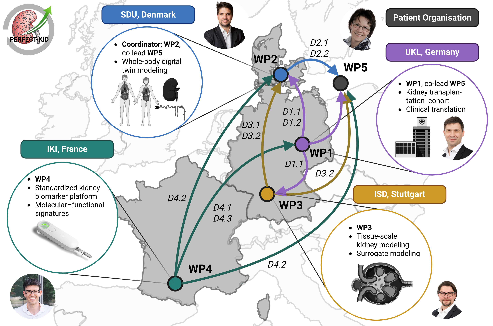

How to create successful graphical abstracts?
A 10 simple rules educational series
Matthias König ![]()
Humboldt-Universität zu Berlin, Faculty of Life Science, Institute of Biology, ITB
University of Stuttgart, Institute of Structural Mechanics and Dynamics in Aerospace Engineering
February 10, 2026
7: Text
Less is more

- graphical abstract should be self-explanatory (without text)
- be consistent (sizes, font-weight, font)
- don’t overwhelm or confuse
Evolution of Graphical Abstracts (PERFECT-KID)


Contact